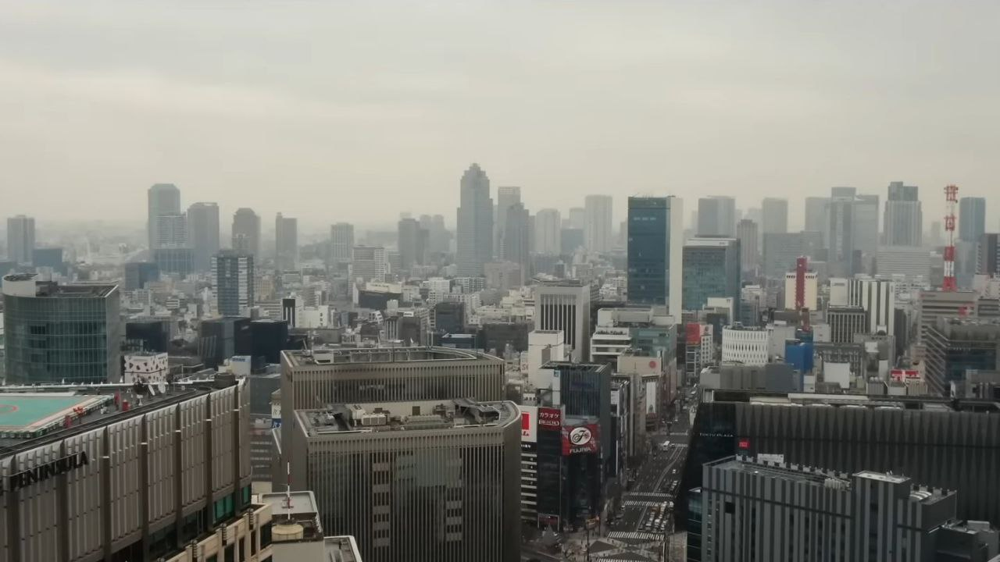
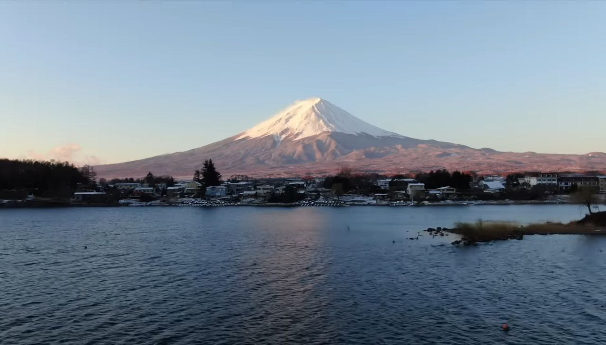
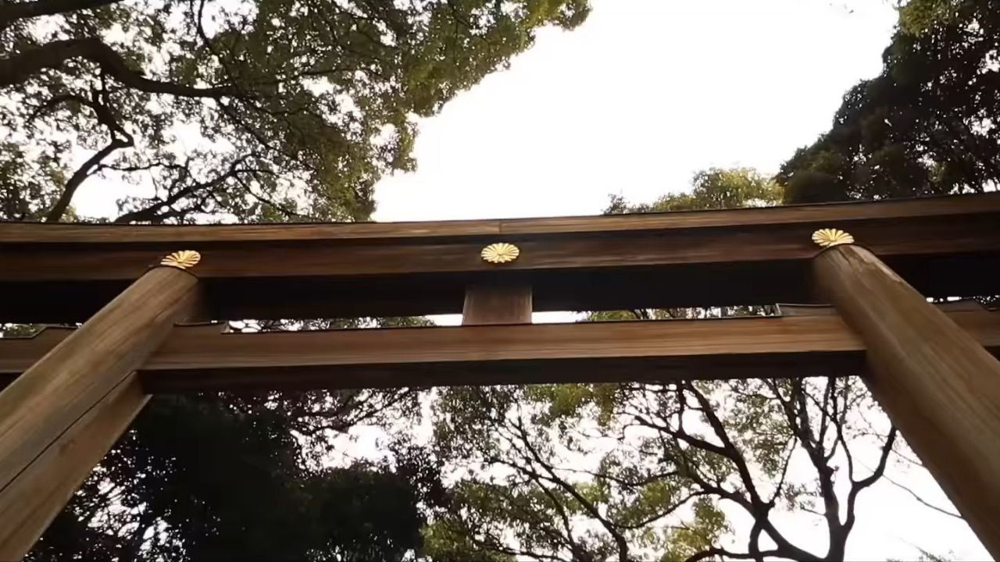
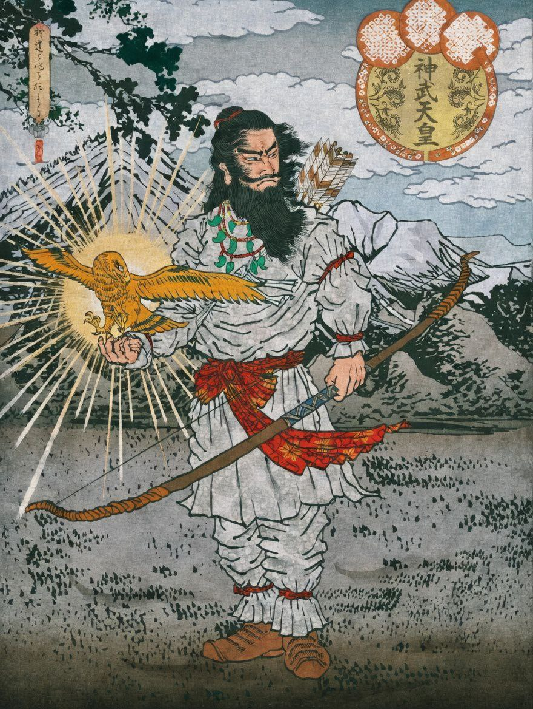
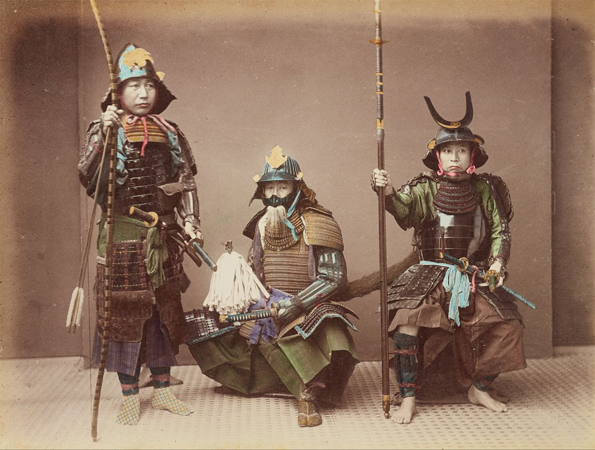
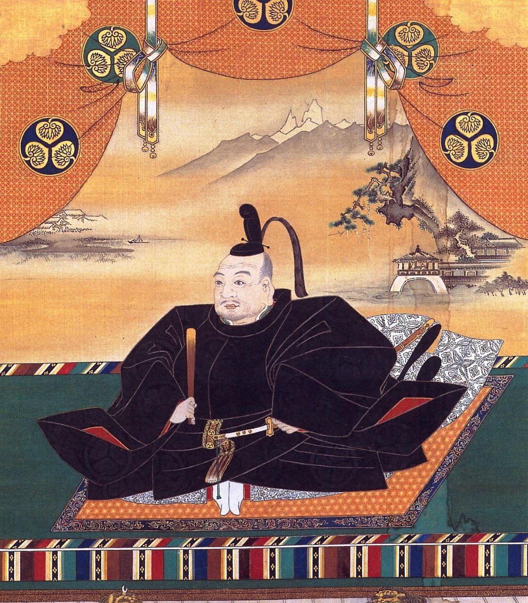
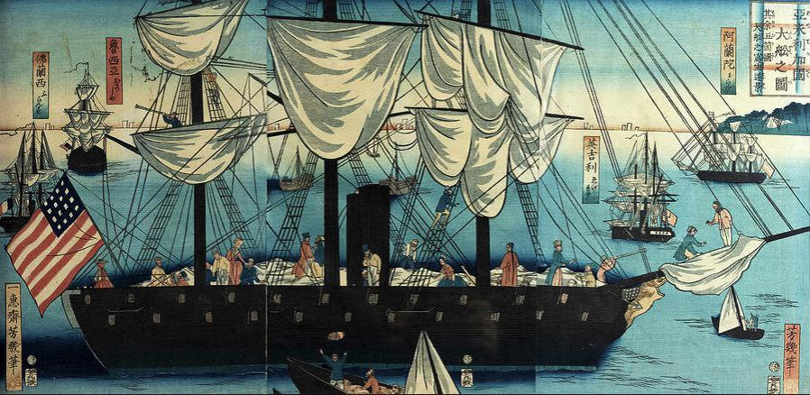
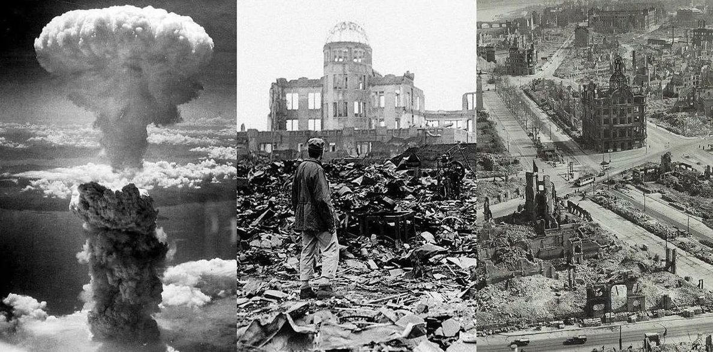

Япония — высокоразвитое государство в Восточной Азии, где тысячелетние традиции соседствуют с современными технологиями. Страна расположена на Японском архипелаге, который насчитывает 14 125 островов. Четыре крупнейших — Хонсю, Хоккайдо, Кюсю и Сикоку. Площадь страны составляет 377 980 км². По данным на 2025 год, численность населения составляет 123 млн человек.
Неофициальное название Японии, часто встречающееся в прессе – Страна восходящего солнца. Сами японцы широко используют в обиходе название «Нихон», которое переводится как «родина Солнца».
Япония — это островное государство в Восточной Азии, расположенное в Тихом океане. Страна состоит из тысяч островов, крупнейшими из которых являются Хонсю, Хоккайдо, Кюсю и Сикоку. Благодаря своему географическому положению Япония окружена морем и славится удивительными природными пейзажами — от горных вершин и густых лесов до живописных озёр и побережий.
Столицей страны является Токио — один из самых крупных и технологически развитых городов мира. Здесь неоновые вывески и современные небоскрёбы соседствуют с тихими храмами и традиционными садами. В этом и заключается одна из главных особенностей Японии: удивительное сочетание древних традиций и передовых технологий.
Одним из самых известных символов страны считается гора Фудзи — величественный вулкан, который вдохновлял художников, поэтов и путешественников на протяжении многих веков. Весной Япония становится особенно красивой, когда по всей стране начинает цвести сакура. Период цветения превращается в настоящий праздник, во время которого люди собираются в парках, чтобы любоваться нежно-розовыми цветами.
Но Япония известна не только традициями. Сегодня она также является одним из мировых центров технологий, науки и современной культуры. Здесь появились популярные во всём мире аниме, манга и видеоигры, а японская кухня — суши, рамен и другие блюда — стала любимой во многих странах.
Именно это сочетание древности и современности делает Японию по-настоящему уникальной страной. Здесь можно увидеть древние храмы, которым сотни лет и одновременно оказаться в одном из самых высокотехнологичных мегаполисов планеты.



История Японии насчитывает тысячи лет и наполнена событиями, легендами и культурными традициями, которые сформировали уникальный облик этой страны. Долгое время Япония развивалась достаточно изолированно от остального мира, благодаря чему смогла сохранить собственные обычаи, религию и искусство.
Одним из важных этапов ранней истории считается период формирования первых государств и зарождения императорской власти. Согласно древним японским легендам, первым императором страны считается Император Дзимму. По преданию, он был потомком богини солнца Аматэрасу и основал японскую династию, которая, как считается, продолжается до сих пор.
Конечно, многие из этих событий носят скорее мифологический характер, однако они играют важную роль в культуре Японии. Именно через такие легенды формировалось представление о божественном происхождении власти и особом статусе императора в обществе.
В последующие века на территории Японии постепенно складывались ранние государства, развивались земледелие и ремёсла, появлялись первые города. Большое влияние на развитие страны оказали Китай и Корея — оттуда пришли письменность, буддизм и элементы государственной системы.

Со временем в Японии сложилась особая система власти, которая сильно отличалась от привычных европейских моделей. Формально главой государства оставался император, однако реальная власть постепенно переходила в руки военных правителей — сёгунов.
Сёгун был не просто полководцем, а фактическим руководителем страны. Именно он управлял армией, принимал важные политические решения и контролировал внутреннюю жизнь государства. Император же в этот период оставался скорее духовным символом, воплощением традиций и единства страны.
Такая система получила название сёгунат. В разные периоды истории власть переходила от одного рода к другому, но принцип оставался тем же: военная элита управляла страной, опираясь на поддержку самураев — профессиональных воинов, связанных с господином узами верности.
Самураи играли ключевую роль в жизни общества. Они не только участвовали в сражениях, но и следили за порядком, собирали налоги и защищали свои земли. Их жизнь была подчинена строгому кодексу чести — бусидо, который требовал дисциплины, преданности и готовности идти до конца.
Несмотря на постоянную борьбу между различными кланами в некоторые периоды, такая система позволяла поддерживать порядок и стабильность. Со временем власть сёгунов укрепилась настолько, что именно они определяли судьбу страны на протяжении нескольких столетий.

Одним из самых известных исторических этапов стал период Эдо, когда власть в стране принадлежала сёгунату Токугава. Этот период часто ассоциируется со стабильностью и порядком, которые сохранялись на протяжении более двухсот лет.
В это время Япония почти полностью закрыла свои границы для внешнего мира. Иностранцам было запрещено въезжать в страну, а японцам — покидать её. Такая политика позволила сохранить традиции и избежать внешнего влияния, но одновременно ограничивала развитие международных связей.
Несмотря на изоляцию, внутри страны активно развивалась культура. Появлялись новые формы искусства — театр кабуки, гравюры укиё-э, литература и поэзия. Города росли, жизнь становилась более насыщенной, а торговля и ремёсла играли всё более важную роль.

Ситуация резко изменилась в середине XIX века, когда Япония была вынуждена открыть свои границы для внешнего мира. Это стало настоящим переломным моментом в её истории.
В стране начались масштабные реформы. За относительно короткое время Япония прошла путь от традиционного феодального общества к современной индустриальной державе. Строились железные дороги, развивалась промышленность, появлялись новые технологии.
При этом японцы старались сохранить свою культурную идентичность. Они перенимали опыт других стран, но адаптировали его под свои традиции и образ жизни.

XX век стал для Японии временем серьёзных испытаний. Страна активно развивалась, укрепляла свою экономику и военную мощь, но в итоге оказалась вовлечена во Вторую мировую войну.
Одними из самых трагических событий стали атомные бомбардировки Хиросимы и Нагасаки. Эти события оставили глубокий след в истории страны и повлияли на её дальнейший путь.

После окончания войны Япония оказалась в сложном положении, однако уже в течение нескольких десятилетий страна смогла восстановиться и добиться впечатляющих результатов.
Этот период часто называют «японским экономическим чудом». Япония стала одной из ведущих экономик мира, а её технологии, автомобили и электроника получили признание по всему миру.
Сегодня Япония — это страна, в которой удивительным образом сочетаются прошлое и настоящее. Древние храмы и традиции мирно соседствуют с небоскрёбами, роботами и высокими технологиями.
История Японии ощущается здесь буквально на каждом шагу — в архитектуре, праздниках, культуре и даже в повседневной жизни людей. Именно это делает страну такой уникальной и притягательной для путешественников со всего мира.